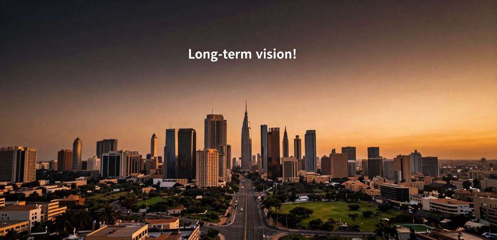

ENGINE 01ADAPTIVE
Living Curriculum
Version-controlled curriculum that updates continuously as industrial evidence, automated tools, and market conditions change. Coursework is treated like production code with formal changelogs.
A long-horizon initiative cannot rely on static curricula or obsolete methods. Africa 2060 identifies systems for continuous institutional learning, outcome tracking and long-term relevance.
No speculative thought pieces or generic blogging. This page establishes our rigorous knowledge architecture and foresight framework.
Identified in the approved Africa 2060 framework as the operational mechanisms ensuring our curriculum, company formation gating, and sector priorities remain ahead of global technological acceleration.
Version-controlled curriculum that updates continuously as industrial evidence, automated tools, and market conditions change. Coursework is treated like production code with formal changelogs.
A formal system function for keeping the Initiative relevant through 2060. Monitors global supply shifts, climate transitions, demographics, and technological disruptions across Africa.
Continuous outcome tracking can inform curriculum and sector decisions without pre-setting specific measurement mechanics on this public page.
A mandatory institutional policy: any module, challenge brief, or sector branch that fails to produce viable enterprise formations over a 12-month cycle is automatically sunsetted or overhauled.
Founders who have successfully formed, funded, and scaled companies through Africa 2060 return to teach, review challenge prototypes, and sit on Venture Formation evaluation panels.
A formal network connecting African operating founders with diaspora engineers, international technical specialists, institutional off-takers, and multinational procurement directors.
These are framework concepts, not presented as a catalogue of published articles or external research.

Move from workforce development as the primary endpoint toward founder creation, company formation and economic ownership.
The approved 20% parent-company equity principle sits within a wider ownership structure whose remaining mechanics are still subject to final legal and investment structuring.
AI fluency supports vocational, technical and operational work across the system rather than operating as a standalone sector.
The institutional knowledge layer feeds directly into the operating machine. Explore how this foresight guides founder training and company formation across Africa.